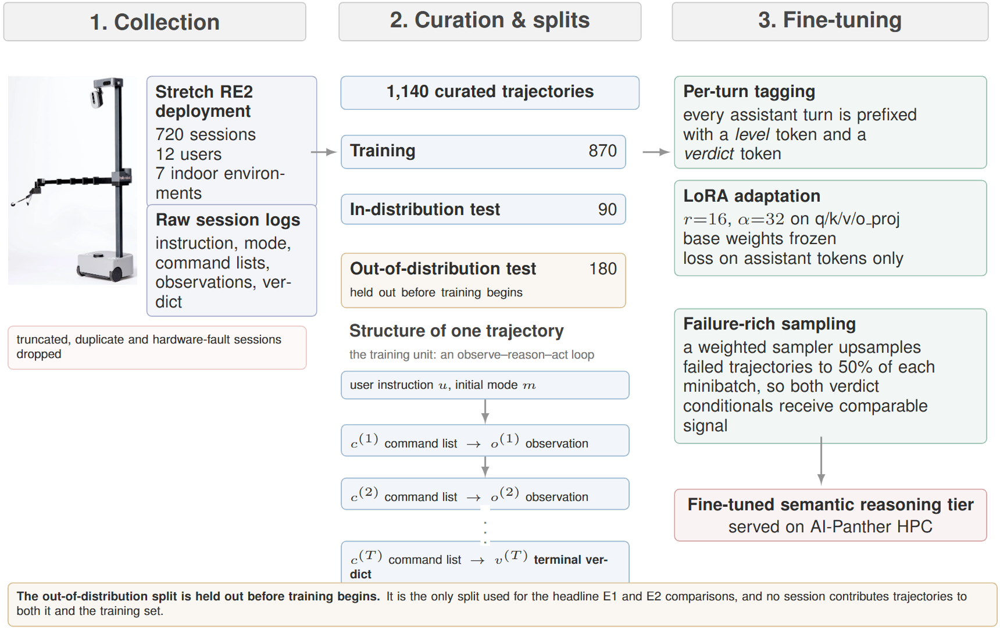
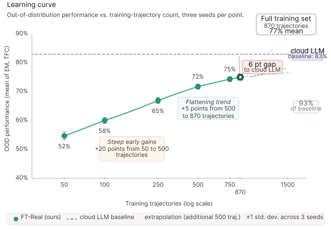

Robotics and Machine Learning Laboratory · Florida Institute of Technology
Trajectory Fine‑Tuning of Local Language Models for Mobile Manipulation
Sub-1,000 real robot sessions match frontier models
1Department of Mechanical and Civil Engineering, Florida Institute of Technology
Private draft. Paper, code, and dataset links activate on release.
TL;DR
We fine-tune small open-weight LLMs on full reasoning trajectories logged from real deployments of a Hello Robot Stretch RE2 — instruction, tool calls, perception observations, actuator commands, and a monitor-verified outcome — rather than synthetic (instruction, command) pairs. Two learned control variables, a level token (high-level behaviour vs. primitive sequence) and a verdict token (forced to <|verdict:success|> at inference through a logit mask), let a Llama-3.1-8B trained on ~870 real trajectories reach 78.4% out-of-distribution grounding accuracy — within 4.7 points of a frontier cloud LLM, 16 points above a matched-scale synthetic baseline — at sub-340 ms latency, fully on premises.
Overview Video
Three minutes: the two-tier architecture, the trajectory fine-tuning recipe, and the robot in action across the five task families.
Robot Demonstrations
Five real-robot runs, each paired with its terminal log — the observe–reason–act sequence exactly as the system produced it. [OBS] lines are perception observations, [THINK] lines are the model's reasoning, and [ACT] lines are the commands dispatched to the actuators.
Approach
The unit of training is the trajectory, not the pair. Each example is one complete observe–reason–act sequence serialised into the exact inference-time prompt format. A <|level:high|> / <|level:primitive|> token before every command list makes the abstraction-level choice a learned, observable variable; a verdict token set to the trajectory's monitor-derived outcome makes success a condition the controller can force at inference. Deployment runs as a two-tier system: a fine-tuned Llama-3.1-8B on the AI-Panther HPC cluster for grounding and multi-turn reasoning, and a fine-tuned Gemma-3-4B on the robot's onboard compute for execution verification and 8 Hz visual servoing.

Results

Citation
@article{huynh2026trajectory,
title = {Trajectory Fine-Tuning of Local Language Models for Mobile
Manipulation: Sub-1,000 Real Robot Sessions Match Frontier Models},
author = {Bullard, Samantha and Huynh, Truong Nhut and Nguyen, Kim-Doang},
journal = {Under review},
year = {2026}
}Acknowledgements
Computation was performed on the AI-Panther HPC cluster at Florida Institute of Technology. We thank the members of the Robotics and Machine Learning Laboratory for deployment sessions and trial supervision.